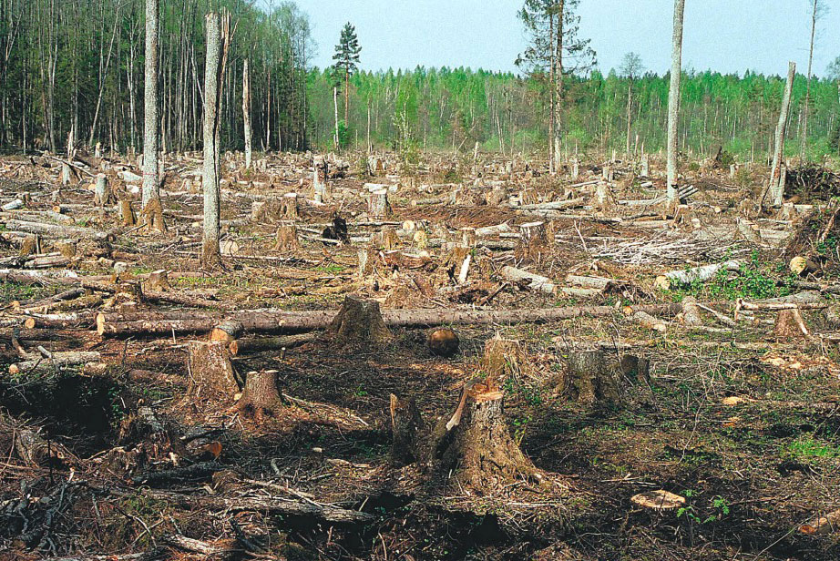

Обезлесение — процесс превращения земель, занятых лесом, в земельные угодья без древесного покрова, такие как поля и пастбища, города, пустоши и другие. Основная причина обезлесения — передача территорий, занятых лесом, под другие цели, в особенности вырубка и выжигание леса под сельхозугодья. Другая заметная причина обезлесения — вырубка леса без лесовосстановления. Кроме того, леса могут быть уничтожены вследствие естественных причин, таких как ураганы, болезни леса, изменение климата, однако основной причиной обезлесения является антропогенный фактор, включая, кроме вырубки и выжигания, например, кислотные дожди. Основная причина возникновения лесных пожаров — также деятельность человека.
